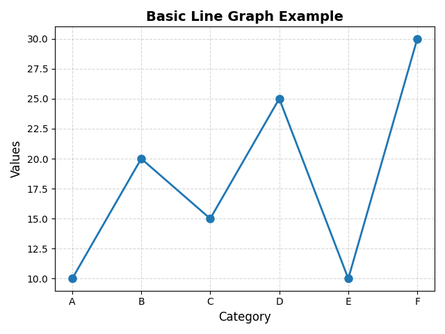

Line Graphs in Matplotlib (Python)
Hey coder! Ever wanted to plot how your progress, your followers, or even your mood changes over time? Line graphs are your best buds for that — smooth, simple, and so visual.
In this guide, we're gonna chill with Matplotlib — a super handy Python library — and learn how to draw clean, easy-to-understand line charts. Perfect if you're just starting out or want to spice up your data game.
When Should You Use a Line Graph?
Use a line graph when you want to show change over time — like how something increases, decreases, or trends. Think of it as a time-traveling chart: you're looking at what happened yesterday, today, and where things might be going tomorrow.
Here are some classic examples:
- Tracking daily temperatures
- Watching your website traffic grow (hopefully)
- Showing how COVID cases went up or down
- Plotting stock prices or your monthly expenses
- Visualizing your study hours over the week
Basically, anytime you have something that moves through time — a line graph can help you make sense of it.
What You'll Learn
By the end of this quick and cozy tutorial, you'll know how to:
- Create your first line graph using
matplotlib - Label your axes and add a neat title
- Customize your lines with different colors, markers, and styles
- Show your graph like a pro using
plt.show() - And feel super proud when it finally works (that feeling hits different)
Step-by-Step Code Example
Here's a simple example of how to create a line graph in Matplotlib:
import matplotlib.pyplot as plt
# Sample data
Category = ['A', 'B', 'C', 'D', 'E', 'F']
Values = [10, 20, 15, 25, 10, 30]
# Create the plot
plt.figure(figsize=(8, 5))
plt.plot(Category, Values,
color='#1f77b4',
marker='o',
linestyle='-',
linewidth=2,
markersize=8)
# Add labels and title
plt.xlabel("Category", fontsize=12)
plt.ylabel("Values", fontsize=12)
plt.title("Basic Line Graph Example", fontsize=14, fontweight='bold')
# Add grid for better readability
plt.grid(True, linestyle='--', alpha=0.5)
plt.tight_layout()
plt.show()Understanding the Code Step-by-Step
- Import library:
matplotlib.pyplotis used to create visualizations. - Define data: Categories (X-axis) and their corresponding values (Y-axis).
- Plot:
plt.plot()draws the line graph with markers, color, and style. - Labels & Title:
xlabel,ylabel, andtitledescribe the graph. - Grid: Adds dashed grid lines for better readability.
- Display:
plt.show()renders the graph on the screen.
What is Linestyle?
Linestyle controls how the line appears between data points — solid, dashed, or dotted.
'-'→ Solid line'--'→ Dashed line':'→ Dotted line'-.'→ Dash-dot line
What is a Marker?
Marker highlights each data point on the graph — like dots, stars, or squares.
'o'→ Circle'.'→ Point'*'→ Star's'→ Square'^'→ Triangle up'+'→ Plus
Marker Size & Line Width
Want to make your graph pop a bit more? That's where markersize and linewidth come in!
- markersize: Controls how big or small each marker appears on the graph.
- linewidth: Adjusts how thick or thin the line is that connects your data points.
Just add them like this: plt.plot(x, y, marker='o', markersize=10, linewidth=2)
Here's the output:

🔹 Mini Project: Track Your Screen Time!
Wanna try out your new matplotlib skills? Here's a chill project idea:
Track your screen time for a week (be honest), then plot it using a line graph!
- X-axis: Days of the week (Mon, Tue, Wed...)
- Y-axis: Hours you spent on your phone/tablet
This is a cool way to visualize your habits — and maybe get that little reality check we all need. Bonus points if you color-code it or add a title like "How Much I Scrolled This Week".